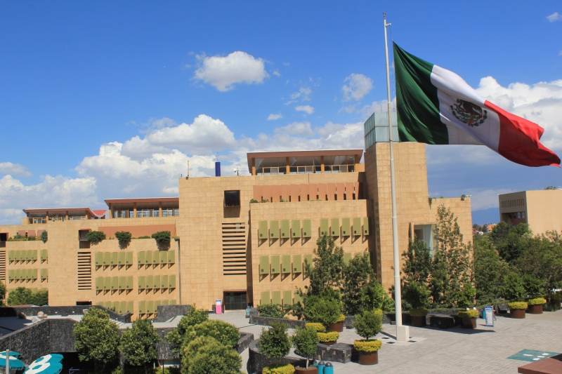

Tecnológico de Monterrey
Located in Mexico City’s leading business district, the Monterrey Institute of Technology and Higher Education, Santa Fe Campus, will be hosting the tournament’s preliminary rounds.
Built in 2001, the campus was designed by Ricardo Legorreta Vilchis, one of Mexico’s most prominent architects; it features a cafeteria called “La Fuente”, a Bloomberg business center, a Gesell camber for marketing research, a library holding more than 53,000 books, an auditorium, a variety of laboratories for mechanics, IT, electronics, manufacture, physics, and chemistry.
Academically, the campus offers high school programmes (bicultural, international and IB), undergraduate degrees in Social Sciences, Finance and Engineering (each with their own student association that bring to the campus international conferences, seminars and recreational activities to further aid in the formation of the alumni), as well as postgraduate degrees which include short-specialty courses and masters in Administration, Finance and Marketing.
As a university, Tec de Monterrey is also aware that culture and sports play an important role in the development of individuals; in that spirit, the campus offers a variety of activities such as music, dance, theater, literature and also has sports facilities such as a full-sized football field, tennis, basketball and volleyball courts, a running track, and a gym.
All of this makes the Santa Fe Campus the ideal setting for the preliminary rounds of WUDC Mexico 2018.
Welcome!
Address:
Av. Carlos Lazo No. 100
Santa Fe, C.P. 01389
Del. Álvaro Obregón
Mexico City


- 